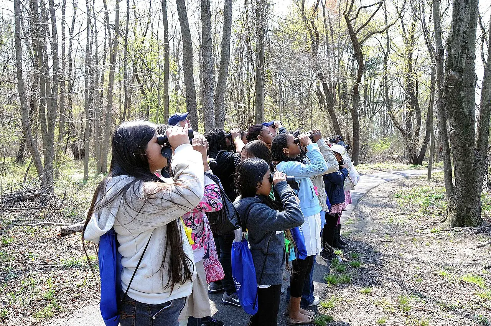

Módulo 6 Aula 25
Como observar aves
Observar aves não exige nada caro: só atenção, paciência e alguns cuidados para não incomodar quem você quer ver.
- O que levar para observar aves
- Como se comportar para não perturbar as aves
- Como começar um caderno de campo

Ave da aula
Observadores em campo
O que levar
- Olhos e ouvidosO principal equipamento. Muitas aves são achadas primeiro pelo som.
- BinóculoNão é obrigatório, mas ajuda a ver detalhes como bico, olho e patas.
- Caderno e lápisPara anotar o que você vê e ouve, na hora.
- Guia ou aplicativoO Merlin é um aplicativo gratuito para identificar aves[4], e o WikiAves reúne fotos e sons de aves brasileiras[5]. O material “Detetives de Aves Brasil”, em português, ajuda a começar[6].
- Roupa e horárioRoupas de cores discretas e sapatos confortáveis. Muitas aves são mais ativas cedo pela manhã e no fim da tarde.
O último item é uma orientação prática comum entre observadores. A cobertura do Merlin varia por região; no Brasil, ele é traduzido, mas parte do conteúdo cobre só algumas regiões[4].
Boas maneiras
Quem observa aves deve pensar primeiro na ave. O Código de Ética da American Birding Association, uma referência entre observadores, pede dois cuidados que valem em qualquer lugar. Primeiro, cautela especial perto de ninhos, colônias, dormitórios, locais de exibição e de alimentação[1]. Segundo, limitar o uso de gravações e outros sons para atrair aves, principalmente em lugares muito visitados, com espécies raras ou ameaçadas[1]. A Audubon reúne um guia para fotografar e filmar aves de forma ética[2].
Regra prática. Se a ave mudou o comportamento por sua causa, pare de se aproximar e recue.
Caderno de campo
Anote no momento, sem esperar chegar em casa. Um bom registro tem:
- Data, hora e lugarOnde e quando você viu a ave.
- Tamanho e formaCompare com uma ave que você conhece, como o pardal ou o pombo.
- Cores e marcasDesenhe se preferir: um esboço simples vale mais que palavras.
- O que ela faziaAndava, pousava em galho, mergulhava, cantava?
- HabitatMata, campo, água, jardim?
Esses são os mesmos elementos que usamos para identificar, e que veremos na próxima aula[3].
Palavras novas
Teste rápido
Sem nota. Se errar, tente de novo.
Perto de um ninho ativo, o que se recomenda?
O que se deve fazer com gravações de canto para atrair aves?
Quando anotar o que você viu?
Referências e leitura complementar
Onde conferir o que foi dito nesta aula. Os números entre colchetes no texto levam a estas fontes. Os links abrem em outra aba.
- ABA Code of Birding EthicsAmerican Birding Association · inglêsRegras de conduta de observadores: proteger as aves, cuidado com ninhos e uso de gravações.
- Audubon's Guide to Ethical Bird Photography and VideographyAudubon · inglês · leitura complementarComo fotografar aves sem perturbá-las.
- Building Skills: The 4 Keys to Bird IdentificationAll About Birds · Cornell Lab of Ornithology · inglêsTamanho e forma, padrão de cor, comportamento e hábitat.
- Merlin Bird IDCornell Lab of Ornithology · inglêsAplicativo gratuito de identificação de aves. A cobertura no Brasil é parcial.
- WikiAves: A Enciclopédia das Aves do BrasilWikiAves · portuguêsMaior base de registros de aves do Brasil, com fotos e sons enviados por observadores.
- Detetives de Aves BrasilCornell Lab of Ornithology · português · leitura complementarMaterial educativo em português para aprender a identificar aves.
Os endereços foram abertos e conferidos em 29/09/2026. Alguns sites de revistas científicas e de órgãos oficiais exigem verificação humana e não puderam ser testados por robô. Sites externos podem mudar ou sair do ar.
Para levar
Em três frases
- Para começar bastam olhos atentos, um binóculo, um caderno e, se possível, um guia ou aplicativo.
- Cuidado com ninhos, locais de exibição e lugares de alimentação, e use gravações de canto com moderação.
- Anotar o que você vê e ouve, no momento, ajuda a identificar depois.